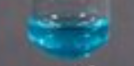
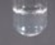
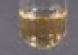
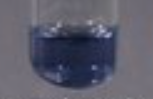
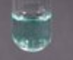
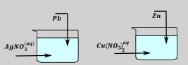
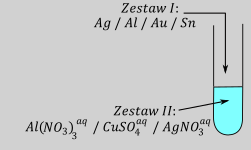
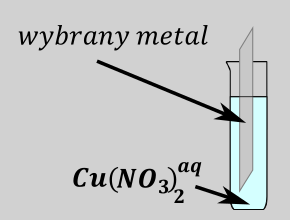

Bardzo popularnym typem zadań jest zadanie, w którym blaszkę wykonaną z jednego metalu zanurzono w roztworze zawierającego jony drugiego metalu. Zadania te można podzielić na dwa podtypy – ustalenie metalu na blaszce oraz w roztworze oraz zadania obliczeniowe związane z zmianą masy blaszki i zachodzącą reakcją.
Pierwszym krokiem jest sprawdzenie czy w ogóle może zajść reakcja wyparcia jednego metalu z drugiego. W tym celu należy ustalić kierunek reakcji samorzutnej pomiędzy metalami obecnymi w układzie reakcyjnym, a następnie stwierdzić, czy mamy wszystkie substraty – bo jak wiadomo, bez substratów nie ma reakcji. Możemy to ustalić przez porównywanie potencjałów lub metodę zegarową – są to dłuższe, ale zawsze poprawne metody. Np. cynk zanurzono w roztworze \(Cu^{2 +}\). Czy zajdzie reakcja?
\[Zn^{2 +} + 2e^{-} \rightarrow Zn\ \ \ \ \ \ \ E = - 0.762V\ \leftarrow\]
\[Cu^{2 +} + 2e^{-} \rightarrow Cu\ \ \ \ \ \ \ \ E = 0.342V \rightarrow\]
\[Cu^{2 +} + 2e^{-} \rightarrow Cu\ \ \ \ \ \ \ \ \]
\[Zn \rightarrow Zn^{2 +} + 2e^{-}\ \ \]
\[Cu^{2 +} + 2e^{-} + Zn \rightarrow Zn^{2 +} + 2e^{-} + Cu\]
\[Cu^{2 +} + Zn \rightarrow Cu + Zn^{2 +}\]
Po ustaleniu kierunku reakcji samorzutnej pomiędzy metalami, widzimy, iż reakcja zajdzie, jeżeli blaszkę cynkową zanurzymy w roztworze jonów \(Cu^{2 +}\) - wtedy mamy w układzie reakcyjnym oba substraty. Zanurzenie blaszki miedzianej w roztworze zawierającej jony \(Zn^{2 +}\) jest zmieszaniem produktów reakcji samorzutnej, a więc taka reakcja nie zachodzi.
Blaszkę srebrną w roztworze miedzi czy reakcja zajdzie?
Zadanie rozpoczynamy od porównania potencjałów i napisania reakcji samorzutnej:
\[Ag^{+} + e^{-} \rightarrow Ag\ \ \ \ \ \ \ E = 0.8\]
\[Cu^{2 +} + 2e^{-} \rightarrow Cu\ \ \ \ \ \ \ \ E = 0.342V\]
\[2Ag^{+} + Cu \rightarrow 2Ag + Cu^{2 +}\]
Po zapisaniu reakcji patrzymy, czy mamy oba substraty, brak przynajmniej jednego uniemożliwia zachodzenie reakcji, a więctaka reakcja nie będzie zachodzić.
Rozpatrywanie reakcji samorzutnej przez porównanie potencjałów jest żmudne czasowo i monotonne. W cel pominięcia tego elementu można zapamiętać, iż aby reakcja zachodziła, metal na blaszce musi mieć mniejszy potencjał.
Kolejnym poruszanym tematem w zadaniach jest zmiana barwy blaszki i/lub roztworu. W celu określania należy zapamiętać barwy typowych jonów metali:
| \[Cu^{2 +}\] | Niebieski  |
\[Cr^{3 +}\] | Zielony |
| \[Fe^{2 +}\] | zielony | \[Mn^{2 +}\] | Bezbarwny/bladoróżowy  |
| \[Fe^{3 +}\] | Żółty-brązowy  |
\[Co^{2 +}\] | Różowy |
| \[Cr^{2 +}\] | Niebieski  |
\[Ni^{2 +}\] | Niebieski, bardzo łatwo pomylić z miedzią  |
Powiedzieć, że powinniśmy znać kolory jonów to jak nic nie powiedzieć.
Oczywiście w trakcie procesu, w którym metal roztwarza się w roztworze zwiększa się stężenie jego jonów w roztworze, a więc jednocześnie zwiększa się intensywność barwy pochodzącej od danych jonów. Oczywiście reakcja, w której osadza się barwny jon metalu na blaszce powoduje zmniejszenie ilości tego metalu na blaszce, a więc zmniejszenie intensywności barwy tego roztworu. Jeżeli podczas reakcji jeden barwny jon metalu osadza się na blaszce, natomiast powstaje drugi barwny jon metalu wówczas roztwór zmienia barwę.
Większość metali jest o barwie srebrzystej, wyjątki to miedź ( o barwie miedzianej, niektórzy piszą o różowym (!?)) i złoto o barwie złotej /żółtej. Unikamy pisania w obserwacjach o miedzianym czy złotym osadzie na blaszce, piszemy, że jest o barwie, (np. powstaje miedź → piszemy powstaje osad o barwie miedzianej), bo nie możesz używać nazw metali, ale barw odwołujących się do metali możesz;)
Kolejnym problemem, z którym można się spotkać podczas analizy zadania dotyczy zmiany masy blaszki (lub roztworu) tzn. czy podczas reakcji masa blaszki rośnie czy maleje?
Aby w ogóle mówić o zmianie masy blaszki musimy wpierw rozważyć czy reakcja zachodzi – brak zachodzenia reakcji jest jednoznaczny z tym, że masa blaszki się nie zmienia w trakcie procesu. Rozważając typową reakcję widzimy, że mamy dwa przeciwstawne procesy – podczas reakcji jeden metal się roztwarza, a więc masa blaszki maleje, ale jednocześnie osadza sie drugi metal to więc masa blaszki rośnie. Kluczem jest ustalenie, który z czynników przeważa. Najłatwiej jest to zrobić przez porównanie masy roztworzonego i osadzanego metalu analizując nijako jeden mol reakcji – dokładne tyle, ile wynoszą współczynniki stechiometryczne. Po na pisaniu równania zachodzącej reakcji musimy porównać masy metalu roztwarzającego się i osadzającego na blaszce. Rozważmy przykład:
Podczas dodania blaszki miedzianej do roztworu jonów srebra(I) zachodzi reakcja:
\[2Ag^{+} + Cu \rightarrow 2Ag + Cu^{2 +}\]
Analizując zapisane równanie chemiczne tej reakcji widzimy, iż na jeden mol roztworzonej miedzi osadzają się dwa mole srebra:
\[2Ag^{+} + Cu \rightarrow 2Ag + Cu^{2 +}\]
Widać, iż zmiana masy blaszki jest równa stracie jednego mola miedzi \(–(1·M_{Cu})\) i przyrostowi dwóch moli srebra \(+ 2M_{Ag}\). Sumarycznie wyrażenie ma postać:
\[- 1·M_{Cu} + 2·M_{Ag}\]
Obliczenie wartości liczbowej wyrażenia daje wynik:
\[\Delta m = - 63.6 + 2·107.8 = 152\ > 0\]
Wartość ta jest większa od zera, a więc masa blaszki rośnie podczas reakcji. Oczywiście wynik mniejszy niż zero znaczyłby, że masa blaszki maleje w trakcie zachodzącej reakcji.
Obliczenie różnicy mas, \(\Delta masy\ = - M_{Cu}\ \ \ + 2M_{Ag}\) blaszka zwiększa masę. Sposób jest bardzo wygodny – względnie szybki i bardzo łatwy, największy minus tej metody– nic nie mówi o tym, ile wzrośnie, ile zmaleje, w żaden sposób nie jesteśmy w stanie zrobić rachunków
Oczywiście, jeżeli reakcja nie zachodzi to masa blaszki się nie zmieni. Jeżeli w zadaniu spotkamy pytanie o zmianę masy roztworu, możemy analizować analogicznie jak analizowaliśmy blaszkę, jeżeli blaszka zwiększa masę to roztwór musi ją zmniejszać i wice wersa. Ewentualnie możemy analizować zmianę masy jonów będących w roztworze.
Przeprowadzono doświadczenie zgodnie z poniższym schematem:

Napisz w formie jonowej skróconej równanie reakcji zachodzącej po dodaniu opiłków ołowiu do zlewki I. Rozstrzygnij czy po zakończeniu doświadczenia masa roztworu w zlewce I wzrosła czy zmalała. Odpowiedź uzasadnij.
Na początku piszemy reakcję samorzutną
\[Pb^{2 +} + 2e^{-} \rightarrow Pb\ \ \ \ \ \ \ E = - 0.126 \leftarrow\]
\[Ag^{+} + e^{-} \rightarrow Ag\ \ \ \ \ \ \ \ E = 0.8 \rightarrow\]
Analizując kierunek reakcji samorzutnej, półreakcję o większym potencjale przepisujemy, a tę o mniejszym odwracam:.
\[Pb \rightarrow Pb^{2 +} + 2e^{-}\]
\[Ag^{+} + e^{-} \rightarrow Ag\]
Mnożymy i sumujemy, tak, aby nastąpiło skrócenie się elektronów:
\[Pb + 2Ag^{+} \rightarrow Pb^{2 +} + 2Ag\]
W tym zadaniu interesuje nas zmiana roztworu, a więc analizujemy indywidua, które znajdują się w roztworze, czyli jony
\[Pb + 2Ag^{+} \rightarrow Pb^{2 +} + 2Ag\]
\[- 2M_{Ag}\ \ \ + M_{Pb} = - 2·107.8 + 207 = - 8.6\]
Czyli masa roztworu ubywa, gdyż masa dwóch moli jonów \(Ag^{+}\) jest większa niż masa mola jonów \(Pb^{2 +}\), wartość uzyskana na końcu jest mniejsza od zera.
Zadania związane z blaszkami najsprawniej można rozwiązywać analizując po kolei
→kolory jonów, gdyż jest to wiedza pamięciowa, umożliwiająca szybkie wykluczenie części jonów
→ potencjały, gdyż wymagają one sprawdzenia w tablicach, ale niewykonywania obliczeń
→masy blaszek, operację tę wykonujemy na końcu, gdyż wymaga ona sprawdzenia mas molowych w tablicach, napisania reakcji, i wykonania prostych bądź c bądź, ale obliczeń.
W celu porównania reaktywności różnych metali wykonano doświadczenie, w którym płytkę z metalu M zważono i umieszczono w naczyniu zawierającym wodny roztwór pewnej soli. W wyniku zachodzącej reakcji roztwór się odbarwił. Ustalono, że w wyniku reakcji masa płytki zmalała.
Wybierz i podkreśl jeden symbol metalu w zestawie I i jeden wzór odczynnika w zetawie II, tak, aby otrzymać schemat przeprowadzonego doświadczenia.

W treści zadania napisane jest: „w wyniku zachodzącej reakcji roztwór odbarwił się”. Zgodnie z tym stwierdzeniem roztwór na początku musiał mieć barwę, a jedynym jonem z wymienionych w zestawie II, który jest barwny jest jon miedzi (II). W związku, z czym jednoznacznie możemy powiedzieć, że wybranym odczynnikiem w zestawie II był \(CuSO_{4}\)
Kolejno przechodzimy do analizy, blaszek. Aby reakcja zaszła, jon metalu w roztworze musi mieć większy potencjał niż metal na blaszce. Potencjał standardowy miedzi wynosi\(\ E_{Cu^{2 +}\text{/}Cu}^{0} = 0.342V\), natomiast potencjał metali w zestawie I to:
\[Ag^{+} \rightarrow 0.8\ \ \ NIE;\ \ \ Al^{3 +} \rightarrow \ - 1.676\ \ \ \ TAK\ ;Au^{3 +} \rightarrow 1.498\ \ NIE\ \ \ \ Sn^{2 +} \rightarrow - 0.138\ TAK\]
Warunek niższego potencjału blaszki spełnia glin oraz cyna, więc srebro i złoto odrzucamy z dalszych analiz.
Ostatnim krokiem jest określenie zmiany masy blaszki podczas
zachodzącej reakcji. Aby ustalić tę zmianę powinniśmy wykorzystać
opisaną wcześniej metodę z pisaniem reakcji samorzutnej i sprawdzaniem
jak zmienia się masa metali w trakcie reakcji. W przypadku analizowanego
zadania
masa blaszki musi maleć
Na początku ustalam reakcję samorzutną, dla glinu ma mogę zapisać:
\[Cu^{2 +} + 2e^{-} \rightarrow Cu\ \ \ \ \ \ \ 0.342\]
\[Al^{3 +} + 3e^{-} \rightarrow Al\ \ \ \ \ - 1.676\]
\[Cu^{2 +} + 2e^{-} \rightarrow Cu\]
\[Al \rightarrow Al^{3 +} + 3e^{-}\ \]
\[3Cu^{2 +} + 2Al \rightarrow 2Al^{3 +} + 3Cu\]
Dopiero po zapisaniu reakcji samorzutnej mogę ustalić, jak zmienia w trakcie reakcji masa blaszki; widzę, że dla mola reakcji roztwarzają się dwa mole glinu i osadzają trzy mole miedzi:
\[3Cu^{2 +} + 2Al \rightarrow 2Al^{3 +} + 3Cu\]
\[\ \ \ \ \ \ \ \ \ \ \ \ \ \ \ \ \ - 2M_{Al}\ \ \ \ \ \ \ \ \ \ \ \ \ \ \ \ + 3M_{Cu}\]
Zmiana masy blaszki wynosi:
\[\Delta m = - 2M_{Al} + 3M_{Cu} = - 2·27 + 3·63.5 = 136.5 > 0\]
W tym wypadku zmiana masy jest dodatnia, a więc masa blaszki musi rosnąć w trakcie zachodzącego procesu.
Analogicznie analizujemy cynę:
\[Cu^{2 +} + 2e^{-} \rightarrow Cu\ \ \ \ \ \ \ 0.342\]
\[Sn^{2 +} + 2e^{-} \rightarrow Sn\ \ \ \ - 0.138\]
\[Cu^{2 +} + Sn \rightarrow Sn^{2 +} + Cu\]
W trakcie procesu roztwarza się mol cyny, natomiast osadza mol miedzi:
\[\Delta m = - 1M_{Sn} + \ \ M_{Cu} = - 118.7 + 63.6 < 0\]
Masa blaszki spada, czyli jest to ten układ.
Analogiczne zadanie to:
Oczyszczoną blaszkę wykonaną z pewnego metalu zważono, a następnie zanurzono w wodnym roztworze \(Cu\left( NO_{3} \right)_{2}\). Zauważono, że powierzchnia blaszki znajdująca się w roztworze pokryła się różowym nalotem o metalicznym połysku. Po pewnym czasie blaszkę wyjęto z roztworu, osuszono i zważono. Stwierdzono, że masa blaszki po wyjęciu z roztworu była mniejsza od jej masy początkowej. Roztwór w zlewce pozostał klarowny i nie zaobserwowano w nim żadnego osadu.
Uzupełnij schemat doświadczenia, wpisując nazwę lub symbol metalu, z którego była wykonana blaszka. Metal wybierz spośród podanych poniżej.
Nazwa metal: glin, nikiel, ołów, srebro.
Schemat wykonania doświadczenia

Na początku wykluczamy z dalszej analizy metale, dla których nie zachodzi reakcja samorzutna z jonami miedzi \(Cu^{2 +}\) Żeby reakcja byłą samorzutna to miedź musiała się osadzić na blaszce, a więc poniższa półreakcja musi zachodzić w prawo:
\[Cu^{2 +} + 2e^{-} \rightleftarrows Cu\ \ \ \ \ \ \ E_{Cu^{2 +}\text{/}Cu}^{0} = 0.342V \rightarrow\]
W związku, z czym druga z analizowanych półreakcji musiała być półreakcją utlenienia, a więc zachodzić „w lewo”
\[Al^{3 +} + 3e^{-} \rightleftarrows Al\ \ \ \ \ \ \ \ E_{{Al}^{3 +}\text{/}Al}^{0} = - 1.676V\]
\[Ni^{2 +} + 2e^{-} \rightleftarrows Ni\ \ \ \ \ \ \ \ E_{{Ni}^{2 +}\text{/}Ni}^{0} = - 0.257V\]
\[Pb^{2 +} + 2e^{-} \rightleftarrows Pb\ \ \ \ \ \ \ \ \ E_{{Pb}^{2 +}\text{/}Pb}^{0} = - 0.126V\]
\[Ag^{+} + e^{-} \rightleftarrows Ag\ \ \ \ \ \ \ \ \ \ \ \ \ \ E_{{Ag}^{+}\text{/}Ag}^{0} = \ \ \ 0.800V\]
Po porównaniu potencjałów widzimy, że opisany warunek spełniają trzy pierwsze półreakcje, a więc srebro wykreślamy z dalszej analizy.
Dopiero teraz określamy dla tych trzech metali zmianę masy blaszki podczas reakcji z miedzią. Dla każdej z analizowanych blaszek zapisuje półreakcję podczas reakcji z jonami miedzi (II) i porównuje zmianę masy związaną z rozpuszczaniem metalu z blaszki i osadzaniem się miedzi:
\[3Cu^{2 +} + 2Al\ \rightarrow 3Cu + 2Al^{3 +}\]
\[dm = \ - 2M_{Al} + 3M_{Cu} = - 2·27 + 3·63.5 > 0 \rightarrow przyrastaby\]
\[Ni + Cu^{2 +} \rightarrow Cu + Ni^{2 +}\]
\[dm = - 58.7 + 63.6 = 4.9 \rightarrow przyrastałaby\]
\[Cu^{2 +} + Pb \rightarrow Cu + Pb^{2 +}\]
\[dm = - 207 + 63.5 < 0 \rightarrow masa\ blaszki\ maleje\]
Widzimy, że warunek zmniejszania się masy blaszki spełniony jest tylko dla reakcji z ołowiem.